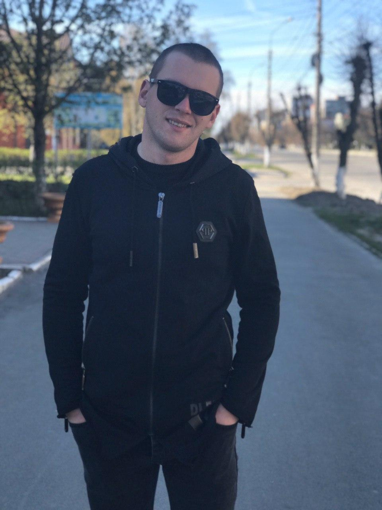

Обо мне
Я Луценко Сергей Сергеевич. 1995 года рождения. Родился в городе Мелитополь Запорожской обл.
Образование: в 2019 года закончил "Классический Приватный Университет" по специальности право - магистр.
Во время учебы в вузе так же был на военной кафедре в "Криворожском авиационном колледже" - филиал от "Киевского
авиационного университета"
после чего получил специальность: инженер по ремонту летательных аппаратов самолетов-вертолётов. Сразу после
окончания магистратуры призвался
офицером-срочником на 1,5 года в ВСУ. На данный момент стою на должности: Начальник цеха по ремонту ракет и
реактивных снарядов.